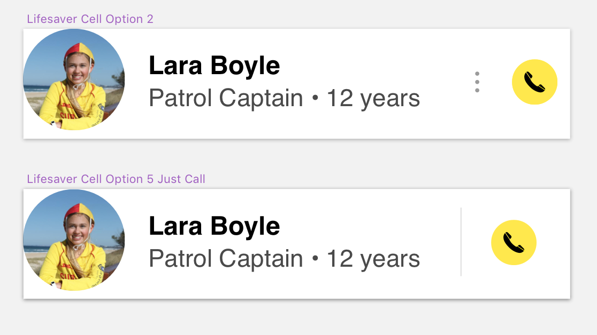

Sketches from our Crazy 8's exercise
Everyone knows the feeling of losing focus, but for a lifesaver that feeling can mean the difference between life and death. Designed for a future 10 years from now, this is the story of an ambitious project to take the burden
of attention off of lifesavers and onto an autonomous system.
In the beginning, I asked Jess and Ian to be in a group with me because I knew they were both talented, and had different skill sets to bring to the table. This semester I was making a point of working with people I had never worked
with before to expand my horizons. Our first task was to write a group charter to agree to a set of guidelines to follow and if necessary, to help resolve disputes throughout the project. None of us took this too seriously, as
we’re a pretty relaxed bunch. We spent the majority of our time trying to create funny answers, rather than constructive ones. So this exercise mostly just turned into a team building ice breaker.
After that exercise we read
through the design brief to get a better understanding of the upcoming assessments.
We then jumped into preparing for assessment one by beginning a mind mapping exercise to brainstorm different areas to research. We started
off with blue skies, considering all ideas where autonomy could have an interesting application. We then narrowed our ideas based on the criteria of group interest, uniqueness, fit for the brief, and ability to access research
participants.
In this exercise, Jess suggested that the world of health could be an interesting area of further research. From general knowledge, we knew the pain points experienced in that sector were profound. From our previous
experience, we had heard the health industry stereotypically lacks the application of a designer’s mindset, and has been known to have been slow to adapt to technology. This meant that if we were to choose the health industry as
an area to pursue, the solution we were to envision would have the potential for great impact. However, we discarded this idea because we had no immediate relationships with research participants in the health sector.
Bouncing
off of Jess’ suggestion, I had also suggested autonomous water based rescues. We agreed this concept matched all of our criteria. Having grown up by the ocean in a coastal town in regional australia, I had access to life saver
research participants through my personal network. Similarly, Jess worked at a public pool and so could research with lifeguards there. This left us with a solid concept to further explore in future weeks.
Our initial brainstorming
session allowed us to see that our personalities clicked with one another. I could see that each of us was proactive and could keep each other accountable, which would be good from a ‘getting shit done’ perspective. I left feeling
optimistic about the potential of our future work together.
In the beginning, I asked Jess and Ian to be in a group with me because I knew they were both talented, and had different skill sets to bring to the table. This semester I was making a point of working with people I had never worked
with before to expand my horizons. Our first task was to write a group charter to agree to a set of guidelines to follow and if necessary, to help resolve disputes throughout the project. None of us took this too seriously, as
we’re a pretty relaxed bunch. We spent the majority of our time trying to create funny answers, rather than constructive ones. So this exercise mostly just turned into a team building ice breaker.
After that exercise we
read through the design brief to get a better understanding of the upcoming assessments.
We then jumped into preparing for assessment one by beginning a mind mapping exercise to brainstorm different areas to research. We started
off with blue skies, considering all ideas where autonomy could have an interesting application. We then narrowed our ideas based on the criteria of group interest, uniqueness, fit for the brief, and ability to access research
participants.
In this exercise, Jess suggested that the world of health could be an interesting area of further research. From general knowledge, we knew the pain points experienced in that sector were profound. From our
previous experience, we had heard the health industry stereotypically lacks the application of a designer’s mindset, and has been known to have been slow to adapt to technology. This meant that if we were to choose the health industry
as an area to pursue, the solution we were to envision would have the potential for great impact. However, we discarded this idea because we had no immediate relationships with research participants in the health sector.
Bouncing
off of Jess’ suggestion, I had also suggested autonomous water based rescues. We agreed this concept matched all of our criteria. Having grown up by the ocean in a coastal town in regional australia, I had access to life saver
research participants through my personal network. Similarly, Jess worked at a public pool and so could research with lifeguards there. This left us with a solid concept to further explore in future weeks.
Our initial brainstorming
session allowed us to see that our personalities clicked with one another. I could see that each of us was proactive and could keep each other accountable, which would be good from a ‘getting shit done’ perspective. I left feeling
optimistic about the potential of our future work together.
In the beginning, I asked Jess and Ian to be in a group with me because I knew they were both talented, and had different skill sets to bring to the table. This semester I was making a point of working with people I had never worked
with before to expand my horizons. Our first task was to write a group charter to agree to a set of guidelines to follow and if necessary, to help resolve disputes throughout the project. None of us took this too seriously, as
we’re a pretty relaxed bunch. We spent the majority of our time trying to create funny answers, rather than constructive ones. So this exercise mostly just turned into a team building ice breaker.
After that exercise we
read through the design brief to get a better understanding of the upcoming assessments.
We then jumped into preparing for assessment one by beginning a mind mapping exercise to brainstorm different areas to research. We started
off with blue skies, considering all ideas where autonomy could have an interesting application. We then narrowed our ideas based on the criteria of group interest, uniqueness, fit for the brief, and ability to access research
participants.
In this exercise, Jess suggested that the world of health could be an interesting area of further research. From general knowledge, we knew the pain points experienced in that sector were profound. From our
previous experience, we had heard the health industry stereotypically lacks the application of a designer’s mindset, and has been known to have been slow to adapt to technology. This meant that if we were to choose the health industry
as an area to pursue, the solution we were to envision would have the potential for great impact. However, we discarded this idea because we had no immediate relationships with research participants in the health sector.
Bouncing
off of Jess’ suggestion, I had also suggested autonomous water based rescues. We agreed this concept matched all of our criteria. Having grown up by the ocean in a coastal town in regional australia, I had access to life saver
research participants through my personal network. Similarly, Jess worked at a public pool and so could research with lifeguards there. This left us with a solid concept to further explore in future weeks.
Our initial brainstorming
session allowed us to see that our personalities clicked with one another. I could see that each of us was proactive and could keep each other accountable, which would be good from a ‘getting shit done’ perspective. I left feeling
optimistic about the potential of our future work together.
We reassembled in week 2 to pinpoint the best approach to converge on our chosen topic of autonomous water based rescues. Building from the areas we had already considered, we thought of four main areas of investigation, ocean and river based
helicopter rescues, public pools, home pools and surf life saving at beaches. As the research task was individual, it seemed logical to split these areas between us, giving each group member a specific area of investigation. Jess was given
public pools. Her work as a lifeguard gave her experience and easy access to participants. Similarly, I had access to life savers through my personal network, and was thus a good fit to research with those who had been involved with beach
based rescues. Finally, Ian was left to choose between either ocean and river based helicopter rescues or home pool rescues, deciding on home pool rescues.
Our next task was to consider which research methods to use. We decided to attempt
each use identical methods so that we could compare our findings more easily once we had converged at the end of our research. Semi-structured Interviews seemed like the ideal method because they’re a short, sharp way of getting an insight
into a problem space. We aimed to collect quality research data with a limited number of participants by using the 5 whys method and a semi structured approach. This would allow the conversation to go in a direction that we may not have previously
considered.
Thinking reflexively, I was happy that we had identified a problem space that each of us was interested in. However, I was also frustrated because I realised that the research analysis was conducted individually as part
of assessment 1. As we were eventually going to compare our results, I realised that we would be analysing our results in silo, away from each other. I would have enjoyed the opportunity to converge and conduct a comparative analysis collaboratively,
based on our collective research. This approach would now have to wait until after assessment one.
During this week, we also collaborated on creating design goals. I wrote a short story below to help communicate the emotional
importance of the goals we created.
Do you remember being afraid of the dark?
I remember lying in bed, scared and sweating as I stared out into my dark room. My imagination would conjure up ghoulish depictions of creatures skulking behind my cupboard and underneath my bed, just out of sight.
Logically, I knew it
was highly unlikely that these fantasies were real, but it wasn’t a logical fear. My fear was based on the emotional threat of what could be, the unknown, unseen and misunderstood.
On some of the occasions, I was so paranoid that I
would suddenly fling myself out of bed and quickly run to turn the lights on. As my room was illuminated, I felt a rush of comfort, safe with the knowledge that truly, nothing but dusty old pyjamas lay behind my cupboard and underneath my
bed.
I think the feeling of being afraid of the dark is similar to people’s fears of Autonomy and Artificial Intelligence. People are afraid of it, because they don’t understand it. As risk averse creatures we naturally fear potential
threats, especially from things that are unfamiliar to us.
With this understanding, we created the following design goals to have a clear compass to guide our project:
At the beginning of this week we met up to devise a set of research questions. Our rationale was that if we each asked the same sets of research questions, the comparitive analysis of our findings would be simpler. We started by prioritising questions
that were not leading.
Using these questions I conducted my first interview with a surf life saver at Coogee. One observation was that she had never been involved with a rescue. There was just so many life savers on patrol at Coogee
beach that there was nothing for her to do, this resulted in feelings of boredom and unfulfillment.
During Thursday's lecture we learnt more of a strategic approach to conducting research. We set about refining our approach based on
the framework provided during the lecture and tutorial.
We started by articulating two solid research objectives so that we were aligned on the vision for our research.
Research Objectives:
1. Identify
common processes of rescue operations in pools and beaches.
2. Identify common problems with rescue operations in pools and beaches.
I believe this helped us later when we converge to compare
our findings because our north store will be clearly defined.
Based on our clearly articulated objectives, we refined our research questions to be:
Later this week, I conducted remote interviews with three other lifesavers. I recorded these interviews for later transcription. The interviews went surprisingly well. I think I was flexible, did not limit the discussion to my agenda and regularly
used a number of probes to allow the participant to share their experience extensively.
My analysis phase involved listening back to interviews, transcribing key quotes into a google doc for each participant. I then moved each key quote into Trello where I conducted my affinity diagram. Trello worked really well as a tool for affinity
diagramming. Key quotes were easy to import and move around as cards. The diagram is available to observe here: https://trello.com/b/h2Y96Ieb/deco2200-affinity-diagram.
In accordance with our research objectives, this
method allowed me to pinpoint a number of problems that lifesavers were experiencing in and around the rescue process. I defined these key problems into insight statements. Probably the most interesting insight was that rescues actually don't
happen very often. This was important because it meant one of our initial concept ideas of an autonomous vehicle that performed rescues would be less useful. Thus we had to be open minded to the feedback we'd received from users to discard
our initial preconceived ideas.
When thinking about how to present my report, I wanted to demonstrate the bottom up approach I had taken. I wanted to visualise how the user quotes had contributed to my insight statements, which in turn
shaped my persona.
I'd learnt about the pyramid method of presentation at Deloitte, and so started with the final output, my persona. I read up on 'About Face, the essentials of Interaction Design' by Alan Cooper and others. There,
they advocate for 'goal based personas' to guide the future ideation phase. I felt an affinity for this method, as generally I find the finer details of personas (e.g where they live, unique personality traits etc.) somewhat noisy. The unnecessary
fluff around personas can serve to detract from the core purpose of a persona, which is to communicate the essence of a users needs, which in turn guides the purpose of a product and how it should behave . As mentioned in About Face,
I chose to focus on the goals of my personas, as they would serve to be a clear guiding light for our future ideation phase. I focused on two of the three types of goals mentioned in 'About Face' - End Goals (what users want to do) and Experience
Goals (what users want to feel).
I created my presentations using sketch. I decided to put an extra amount of effort into the visual design of the storyboards because I had seen others in my class do an excellent job with digital illustrations
in the past, and I felt compelled and inspired to learn. However, this inevitably became a time vacuum, which meant that I had to sacrifice other aspects of my presentation in order to focus on the illustrations. Thinking back, although
my marks suffered as a result, I have no regrets. I tryed something new that I was interested in, regardless of whether it matched with the weighting of the marking criteria.
We assembled for a session outside of class. We began by pitching our research findings to one another, writing and discussing feedback using the Rose, Bud, Thorn method. We finally decided to focus on my area of research, surf life savers at
the beach, because each of us found the prospective application of autonomy at the beach interesting and motivating. There were a range of deep potential pain points that I had identified from my insight statements. This allowed us the opportunity
to ideate across the entire service experience of suf life savers. We also had access to a number of participants for future research.
Once we had the problem area identified, we were then left with the decision of which specific pain
points to focus on. We broke the user needs into 2 broad categories, communication and identification, and allowed these two categories to be the focus of our ideation session.
We used the Crazy 8’s method to come up with as many ideas
as possible in a short space of time. We then converged as a group to select the ideal solutions.
Sketches from our Crazy 8's exercise
Here is a collection of a number of our ideas, linked to the user needs that came from my research.
| User needs | Solution Concepts |
|---|---|
| ∙ Lifesavers often don’t see swimmers that are in danger ∙ It can be hard for lifesavers the recognise the signs of swimmers in danger ∙Rescuing people doesn’t happen very often |
An autonomous system that could monitor the ocean and alert lifesavers to potential hazards. Cameras that were located in the flags |
| ∙ Language barriers can make it hard for lifesavers to communicate with beachgoers | A translator app, to enable lifesavers to overcome language barriers and effectively communicate with beachgoers |
| ∙ Lifesavers external communication methods can be improved | Redesigned signals such as shark alarms and signage |
The main pain point that all research participant’s emphasised was an inability to see people who were in danger. Thus, we decided to focus on the concept of the autonomous monitoring system. However, after some refinement instead of
placing cameras in the flags, the concept became the aerial life saving (ALS) blimp, with cameras placed in the air to monitor the ocean .
We chose to focus on this concept because it was the best fit for the brief and solved a range
of lifesaver’s problems, that had been discovered during our initial research.
This solution primarily addresses this issue, however with the scope of the brief so unconstrained, we were allowed to consider other pain points that
participant’s had discussed.
It was at this point during our ideation sessions that I started to lose some interest in the project work for DECO2200. My group and I came to the realisation that when thinking of a UI for future scenario,
real world feasibility constraints can largely be ignored under the justification of ‘it’ll all be possible with future technology’. Here, I realised that a lot of what I find interesting about the design process is the puzzle of solving something
that is a balance between desirability and feasibility. When there are no feasibility constraints, you can dream up all kinds of magic solutions that are plausible in a future scenario. I found that this means that, similar to Deus ex machina,
it all feels too easy, too convenient, and overly simplistic.
Our unit coordinator advised us to choose a singular concept that branched into two User Interfaces, as opposed to two ideas that branched into one UI. Thus we chose this approach to execute the UI for our 'Aerial Life Saver' concept.
Our
approach to wireframing was a little sporadic. Our first lo-fi UI flow began as an in class exercise. We started by diverging to sketch out initial ideas before converging on one. We had Jess make the final low-fidelity wireframes, before
we imported them to POP. A tool that I found simple and useful.

A variety of sketches from our wireframing phase
We completed one UI flow and begun creating the UI for the second use case, however ran out of time and resigned ourselves to meeting outside of class before the tutorial next week.
For the second UI, I mainly did this myself. I chose to
start my wireframes digitally, as I'd done in a professional capacity before. I thought this would be quicker because my ideas for this UI would require the duplication of similar screens. A quick copy paste is not possible in the real world.
We recieved feedback from our tutor that this was against the brief which directly required starting on paper. At the time, we chose to ignore the recommendation to redo our designs on paper, however if I had my time again I would start ideating
on paper. It allows you to explore multiple ideas quickly, and there is something creatively freeing about pen and paper that a computer just doesn't reconcile with.
We then considered our future research approach. We chose the approach
of evaluating the usefulness and usability of our concepts simultaneously. We conducted semi-structured interviews and task based usability testing with 4 lifesavers. One more of our life saver research participants was suffering mental health
issues and requested we email her the tasks and interview questions for her to record her responses digitally.We started our sessions by asking questions related to the usefulness objective, we then conducted usability sessions by giving users
tasks to complete and observing potential problems. We then showed our users both interactive prototypes and asked more general questions related to usability such as ‘what did they like most and least’? Finally, we reiterated the original
question after they had interacted with the prototypes. This allowed us to investigate if the way the prototypes looked as wireframes impacted how users felt about their usefulness. For all respondents, there was no observed attitudinal change.
We
then tested our lo-fi mockups with users. However, I learnt that one key learning was to be more organised and deliberate about coordinating lo-fi testing in the future.

Testing our low fidelity prototypes with users
After some testing, we realised a need for more iteration during our wireframing stage, so we went back to the drawing board to generate more ideas. We mirrored the wireframing exercise we had done in class, setting a timer for 15 minutes to draw
out new UI ideas, and then 10 minutes for feedback and presentations, 15 minutes more to incorporate feedback. This divergent/convergent process allowed us to individually come up with ideas and then collectively refine and improve towards
the best versions of those ideas for testing.
Ian and I had disagreements about particular UI patterns, including whether the home screen should include a live feed from the blimp or a decorative photo of the beach. Both of us had strong
arguments, him saying the photo was relatively useless, I saying the live photo was likely to be too much information to display in the available screen real estate. We decided to narrow down our UI concepts as much as we could, and in instances
where we could not agree, decided to test multiple concepts with users in the future.
The final part of our tutorial was spent planning using a Gant chart. We realised the need for a project plan because of the shortening time
frame and long list of things to do. Later, we missed the deadlines we set for ourselves, which created a stressful environment for the team.
This week I tried to organise user testing with some participants that I had interviewed for assignment 1. So far 2 have replied, neither are available due to study requirements.
We also met up to document our process from last weeks wireframing
session, scanning our wires, writing annotations and a pros and cons list. A key learning was that we should have documented our feedback while it was fresh in our minds after the initial session.
We also conducted our first UI test
with two participants of Coogee SLSC (surf life saving club). Ryan was a junior lifesaver and his father David was a senior inflatable rescue boat driver. Ryan was one of Ian’s neighbourhood friends. We went in with the mindset of testing
two areas, the usefulness of each solution concept and the usability of each UI.I’d prepared for the session by putting together a run sheet with set questions. However, once we were in the room, it largely became a semi-structured conversation.
I think this is partly of Ian’s existing rapport with the participants.
We started by pitching the larger concept of a blimp that monitored the ocean, taking the burden of attention off of lifesaver’s and onto an autonomous system.
We then explained the two ideas behind our UI flows. By getting participants to build their own mental models of the concept before showing them the UI, we could see how their expectations were challenged once we showed them our ideas. This
was facilitated by asking questions like “Is there any other features that could be useful that you think we've missed?”
Upon reflection, I think it would have been more effective to conduct the usability tests individually, rather than
two simultaneously. The older participant definitely talked the most and led the conversation. It felt like we could have got more of a rich response from the younger participant, if he hadn’t had his father in the room as well. In this way,
it was a key learning to conduct usability tests one on one. It’s good to learn this early on so that we can do better for upcoming tests.
Because we had taken a less structured approach, the conversation was driven by the participants
at certain points. This meant that a large part of the discussion revolved around details that were out of the scope of our assessment, such as the feasibility of the solution concept. The session also went for approximately 1.5 hours, which
was much longer than expected. Sticking closer to the run sheet may be an effective strategy for dealing with these issue in the future.
We also conducted more Nielsen's Heuristics reviews so as to allow ourselves more openness for future testing.

This week I conducted another prototype test with a 21 year old life saver from Lennox Head, NSW. Overall the session went well, it did seem like he was saying yes to anything I said though, so I compensated for this by asking him questions like
“is there anything missing?” to see what other ideas he might have on improving our designs.
We also conducted one more interview via email at her request because of mental health issues. A list of questions and tasks was
emailed to her which she responded to.
Sadly I was occupied with other assessments this week, and did not have the opportunity to work on the assessment as much as I would have liked.
This week was a mad rush to complete all the required documentation. We had largely finished the fun stuff, researching with users and using our creativity to iterate. However, for the most part we had neglected to document our prototyping process
while we were doing it. This left us with the mammoth task of completing the documentation in the final stages. Thankfully, the team pulled together and worked on the documentation collaboratively, this allowed us to submit the assessment
to a decent standard in the nick of time.
Thinking back, the biggest contributing factor to the problem of rushing to complete the assessment was the lack of organisation. Although our team brought a diverse set of complementary skills
to the table, one key element that was missing was the project manager role. Although our work was comprehensive, it lacked planning. This also created the issue of unequal distribution of work.
Although we had attempted to negate
this issue by implementing Gantt charts two weeks previously, we did not keep to the deadlines we had set in these exercises. This resulted in unnecessary stress as we sought to match our high goals within the timeframe we had left for ourselves.
In future, we can work together better as a team if we plan the project from the outset and hold ourselves accountable to meeting our set deadlines.
This week was spent polishing our low fidelity wires, and moving them into high fidelity mockups. This was a reasonably clean process. The only major hitch was some uncertainty about the contacts screen. A usability issue arose, where we
weren't certain users would understand 2 functions. After much debate and some informal testing with classmates, we settled on a call icon, seperated by a line.

My only complaint was that this was largely done by me, and the othe members of the group did not really contribute to this part of the process.
Here was the opportunity to create the interactions that I had imagined in high fidelity. Where as I'd previously done work designing user interfaces, I'd never had the opportunity to prototype in high fidelity before. This was an exciting and
different experience.
We chose framer as our prototyping tool because I knew that we would have certain niche requirements for our prototype. Namely, a pannable, zoomable live view of the beach. From our introducton in the tutorial,
I knew that Framer's coffeescript powered engine had the depth and flexibility to execute our goals.
I thought this assessment was a good chance to learn Framer however, if I had my time again, I don't think I would use it. Certainly,
it provided the depth we desired, but at the cost of hours of time searching through documentation for the right code to use and then debugging when it didn't work. Another issue we ran into was that, because we no one in my group was a proficient
programmer, we created spaghetti code. Thus our framer file was not optimised, which caused the prototype to lag and a range of other bugs.
By my understanding, the purpose of prototyping is to get something out quickly
to present and communicate to others. My experience using Framer was entirely time consuming. In my opinion, if you're going to sink that much time into prototyping, you might as well legitimately build it. I observed other students
using Adobe XD to create simple but powerful interactions quickly and easily. Althought this tool may not have provided the depth of interaction we desired, if the goal is simply to communicate the essence of an idea, Adobe XD would
be the direction I would try out if I had my time again.
Looking back, I was happy with our final prototype, it aligned with our initial goals, but the thing that made me most satisfied is that solves a clear problem that came from
our research